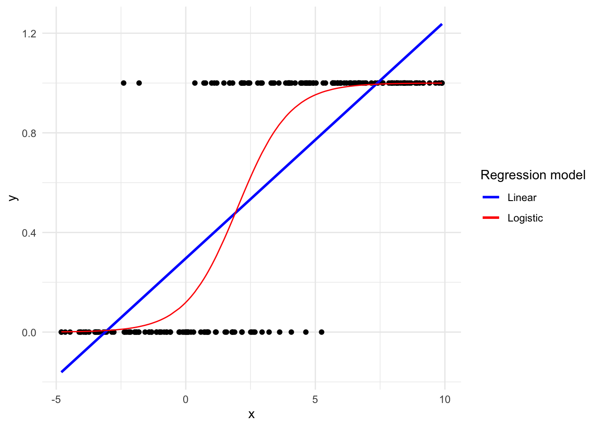
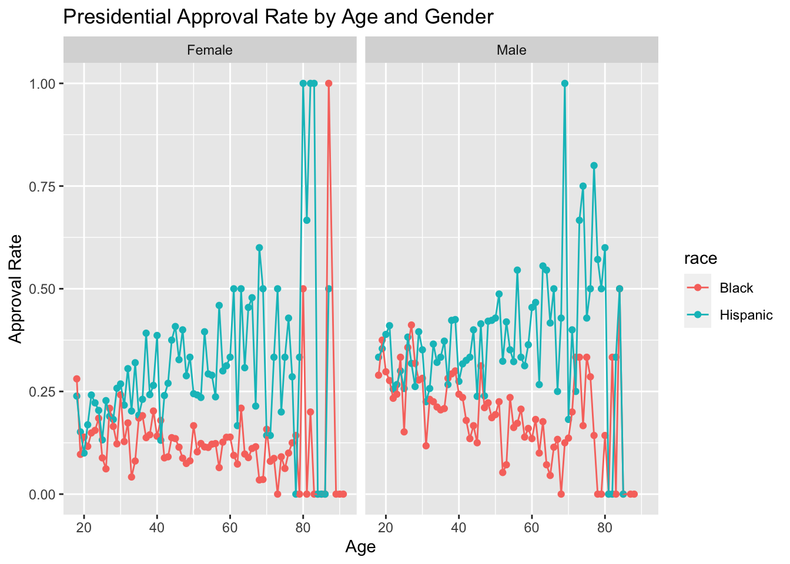
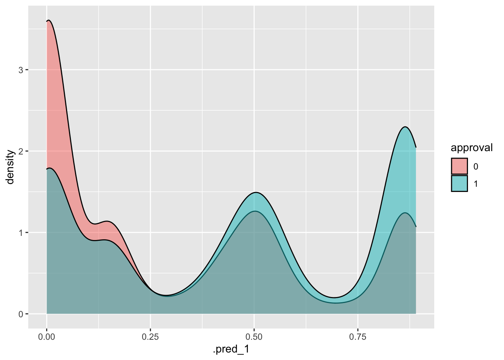

Chapter 11 Discrete Response
Binary responses take on only two values: success (\(Y=1\)) or failure (\(Y=0\)), yes (\(Y=1\)) or no (\(Y=0\)), et cetera. Binary responses are one of the most common types of data that statisticians encounter. We are often interested in modeling the probability of success, \(p\), based on a set of covariates. As with regression, there are two broad categories of problems: modeling for prediction and modeling for causation. Although terminology varies across fields, “regression” is generally used for situations in which our dependent variable is continuous, as in Chapter 10. “Classification” applies to cases in which the dependent variable takes on discrete values, the simplest of which is the binary case.
In this chapter, we will look at three common techniques of classification of binary data. First, we will consider logistic regression, which is similar conceptually to the linear regression models we considered in Chapters ?? and 10. Second, we will consider classification and regression trees (CART). Third, we will discuss random forests. We use the tidymodels tools for all examples.
11.1 Exploratory Data Analysis (EDA)
Begin with our usual libraries:
Before we start modeling, let’s perform some exploratory analysis on the dataset we’ll be working with, cces. Cces stands for the Cooperative Congressional Election Study, a study regarding the approval rating of individual voters to their sitting president. Each row captures one voter, some of their demographic information, and how highly they approve (or disaprprove) of the president. Let’s first look at the raw data values by either looking at cces using RStudio’s spreadsheet viewer or by using the glimpse() function from the dplyr package:
## Rows: 452,755
## Columns: 12
## $ year <int> 2006, 2006, 2006, 2006, 2006, 2006, 2006, 2006, 2006, 200…
## $ state <chr> "North Carolina", "Ohio", "New Jersey", "Illinois", "New …
## $ gender <chr> "Female", "Male", "Female", "Female", "Male", "Female", "…
## $ age <int> 32, 49, 54, 34, 20, 27, 47, 20, 77, 19, 53, 55, 38, 72, 4…
## $ race <chr> "White", "White", "White", "Black", "White", "White", "Wh…
## $ marstat <chr> "Divorced", "Married", "Divorced", "Single / Never Marrie…
## $ ideology <fct> Liberal, Moderate, Liberal, Liberal, Liberal, Liberal, Co…
## $ education <fct> High School Graduate, Post-Grad, High School Graduate, 4-…
## $ news <chr> NA, NA, NA, NA, NA, NA, NA, NA, NA, NA, NA, NA, NA, NA, N…
## $ econ <chr> "Gotten Worse / Somewhat Worse", "Gotten Much Worse", "Go…
## $ approval_ch <chr> "Strongly Disapprove", "Strongly Disapprove", "Strongly D…
## $ approval <dbl> 1, 1, 1, 1, 1, 1, 5, 1, 1, 2, 4, 1, 4, 5, 1, 1, 1, 3, 1, …We will tweak the data by only looking at observations recorded in the year 2018 so that all the responses are about the same president. We’ll also select the variables that are currently of interest to us. Finally, because this chapter will be dealing with logistic regressions, we want to convert the numeric approval variable into a binary variable. approval is a numeric variable from 1-5 with 5 representing the highest approval of the president. In order to do this, we have to turn approval into a binary variable. 1-2 will be coded to 0 to signify disapproval and 3-5 will be coded to 1 for approval. We will also cast approval as a factor variable rather than a number, which is useful information for models.
ch12 <- cces %>%
filter(year == 2018) %>%
select(state, age, gender, race, education, ideology, approval) %>%
mutate(approval = as.factor(case_when(
approval == 1 ~ 0,
approval == 2 ~ 0,
approval == 3 ~ 1,
approval == 4 ~ 1,
approval == 5 ~ 1)))From this, we can gather that there are 16 variables. Notably, there are 60,000 observations even after filtering only for the year 2018.
Let’s also display a random sample of 5 rows of the 60,000 rows. We will be displaying these 5 random observations using a gt() table. .
| State | Age | Gender | Race | Education | Ideology | Approval of President |
|---|---|---|---|---|---|---|
| Georgia | 24 | Female | Hispanic | 4-Year | Conservative | 0 |
| North Carolina | 61 | Female | White | Post-Grad | Conservative | 1 |
| Texas | 25 | Female | Mixed | Some College | Very Liberal | 0 |
| Texas | 83 | Female | White | High School Graduate | Very Conservative | 1 |
| Indiana | 74 | Female | White | High School Graduate | Conservative | 1 |
| A random sample of 5 out of the 60,000 voters | ||||||
Now, let’s compute summary statistics. Let’s use the skim() function from the skimr package.
| Name | Piped data |
| Number of rows | 60000 |
| Number of columns | 7 |
| _______________________ | |
| Column type frequency: | |
| character | 3 |
| factor | 3 |
| numeric | 1 |
| ________________________ | |
| Group variables | None |
Variable type: character
| skim_variable | n_missing | complete_rate | min | max | empty | n_unique | whitespace |
|---|---|---|---|---|---|---|---|
| state | 0 | 1 | 4 | 20 | 0 | 51 | 0 |
| gender | 0 | 1 | 4 | 6 | 0 | 2 | 0 |
| race | 0 | 1 | 5 | 15 | 0 | 8 | 0 |
Variable type: factor
| skim_variable | n_missing | complete_rate | ordered | n_unique | top_counts |
|---|---|---|---|---|---|
| education | 0 | 1.00 | FALSE | 6 | Hig: 16617, 4-Y: 14256, Som: 12631, Pos: 8316 |
| ideology | 419 | 0.99 | FALSE | 6 | Mod: 17302, Con: 12052, Lib: 10929, Ver: 7434 |
| approval | 33 | 1.00 | FALSE | 2 | 0: 33743, 1: 26224 |
Variable type: numeric
| skim_variable | n_missing | complete_rate | mean | sd | p0 | p25 | p50 | p75 | p100 | hist |
|---|---|---|---|---|---|---|---|---|---|---|
| age | 0 | 1 | 48 | 18 | 18 | 32 | 48 | 62 | 95 | ▇▇▇▅▁ |
You’ll notice that we are missing data for our ideology and approval variables. The complete_rate column tells us that approval has 3% missing observations and ideology has 0.7% missing observations. Let’s use the function drop_na() to get rid of these missing observations so they don’t interfere with our models later in the chapter:
To complete our exploratory data analysis, let’s create some data visualizations.
The primary response variable left in our dataset is approval, a (newly) binary variable with 0 representing disapproval of the President and 1 representing approval. So, let’s start by looking at the overall distribution of approval.
ch12 %>%
ggplot(aes(x = approval)) +
geom_bar(fill = "red") +
labs(y = "Count",
x = "Presidential Approval",
title = "Presidential Approval in 2018") According to this graph, there are roughly 10,000 more voters who disapprove of Trump. To make things more interesting, let’s look at approval across gender and then race.
ch12 %>%
ggplot(aes(x = approval, fill = gender)) +
geom_bar() +
labs(y = "Count",
x = "Presidential Approval",
title = "Presidential Approval in 2018 by Gender") +
facet_wrap(~ gender) +
theme(legend.position = "none")
It seems that females have higher rates of disapproval of the President males.
ch12 %>%
ggplot(aes(fill = approval, x = race, y = age)) +
geom_bar(position="fill", stat="identity") +
labs(y = "Percentage",
x = "Presidential Approval",
title = "Presidential Approval in 2018 by Race")
This segmented bar graph shows us the percentage of each race that approved of the president.We can see that the disapproving majority in the overall data is present across most races.
Now, let’s use our ideology variable. ideology has values “Very Liberal”, “Liberal”, “Moderate”, “Conservative”, “Very Conservative”, and “Not Sure”. Let’s create a jitterplot with approval to see hoow approval varied across political affiliations.
ch12 %>%
ggplot(aes(x = ideology, y = approval)) +
geom_jitter() +
labs(y = "Presidential Approval",
x = "Ideology",
title = "Presidential Approval by Ideology")
As one would expect, approval is denser for conservative and very conservative voters while disapproval is denser for liberal and very liberal voters.
11.2 Logistic regression
11.2.1 What is logistic regression?
Now that we know our dataset a little better, let’s begin our first way of modelling binary/discrete data: logistic regressions.
Figure 11.1 illustrates a data set with a binary (0 or 1) response (\(Y\)) and a single continuous predictor (\(X\)). The blue line is a linear regression to model the probability of a success (\(Y=1\)) for a given value of \(X\). With a binary response, the linear regression has an obvious problem: it can produce predicted probabilities below 0 and above 1. Probabilities can only range from 0 up to and including 1 as these represent a 0% and 100% chance of an event happening, respectively.
The red curve is the logistic regression curve. Note that its characteristic “S” shape always produces predicted probabilities between 0 and 1. Here is the formula for a logistic regression:
Where \(p\) is the probability of a “yes” or “success” for a given set of predictors \(X\).
FIGURE 11.1: Linear vs. logistic regression models for binary response data.

The mathematical function \(log\left(\frac{p}{1 - p}\right)\) is called the logit function and it transforms variables from the space \((0, 1)\) (like probabilities) to \((-\infty, \infty)\). The inverse of that function, the standard logistic function, is \(\frac{1}{1 + e^{-x}}\) and transforms variables from the space \((-\infty, \infty)\) to \((0, 1)\). From that latter function’s name we get the terminology of logistic regression.
11.2.2 One categorical explanatory variable
Let’s start our modeling by predicting approval with a single categorical explanatory variable. We’ll start by modeling our new binary approval with the categorical variable race. As we’ll see, the syntax for running a logistic regression in R is very similar to that for running a linear regression. In fact, we’ll follow the same basic steps:
- We first “fit” the logistic regression model using the
glm(y ~ x, family, data)function and save it inrace_model. - We get the regression table by applying the
tidy()function from the broom package torace_model. We’ll print theterm,estimate,conf.low, andconf.highcolumns.
Note that the key difference is that instead of using lm(), we are now using glm(). glm() operates very similarly to lm(), but it has an additional argument: family. To run a logistic regression, we use family = binomial. This means that it will be modelled along the red line in Figure 11.1 rather than the blue line.
Next, let’s fit a model and tidy() it:
race_model <- glm(approval ~ race, family = binomial, data = ch12)
race_model %>%
tidy(conf.int = TRUE) %>%
select(term, estimate, conf.low, conf.high)| term | estimate |
|---|---|
| (Intercept) | -0.887 |
| raceBlack | -0.799 |
| raceHispanic | 0.032 |
| raceMiddle Eastern | 0.086 |
| raceMixed | 0.045 |
| raceNative American | 1.037 |
| raceOther | 1.209 |
| raceWhite | 0.869 |
How can we interpret the coefficients? Unlike linear regressions, these coefficients aren’t directly interpretable. Recall our logistic regression model equation:
\[ \log\left(\frac{p}{1 - p}\right)=\beta_0+\beta_1X \]
A one-unit change in \(X\) thus is associated with a one-unit change in \(log\left(\frac{p}{1 - p}\right)\), where \(p\) is the predicted probability of success. It is hard to understand intuitively what this means. We can directly calculate all the possible values of \(p\) this model by using the standard logistic function:
\[ p = \frac{1}{1 + e^{-(\beta_0+\beta_1X)}} \]
We can first use this formula to fill \(b_0\) with the intercept (representing Asians) and omit the \(b_1\) as we are solving for the probability of an Asian American approving of the President.
\[ p_{pres\_approve} = \frac{1}{1 + e^{-(-1.06)}} = 0.257 \]
We can then fill in the \(b_1\) term to calculate the probabilities of all races: - White: \(\frac{1}{1 + e^{-(-1.06 + 0.99)}} = 0.482\) - Black: \(\frac{1}{1 + e^{-(-1.06-1.01)}} = 0.112\) - Hispanic: \(\frac{1}{1 + e^{-(-1.06 + 0.036)}} = 0.264\) - Middle Eastern: \(\frac{1}{1 + e^{-(-1.06 + 0.007)}} = 0.259\) - Native American: \(\frac{1}{1 + e^{-(-1.06 + 1.1)}} = 0.51\) - Mixed: \(\frac{1}{1 + e^{-(-1.06 + 0.071)}} = 0.271\) - Other: \(\frac{1}{1 + e^{-(-1.06 + 1.3)}} = 0.559\)
However, there is a way to calculate these predicted probabilities using R without doing all of the math of the standard logistic function..
We have previously defined the following three concepts for a linear regression:
- Observed values \(y\), or the observed value of the outcome variable
- Fitted values \(\widehat{y}\), or the value on the regression line for a given \(x\) value
- Residuals \(y - \widehat{y}\), or the error between the observed value and the fitted value
We obtained these values and other values using the augment() function from the broom package. Recall too that we used the .se.fit column to construct confidence intervals. We’ll see here how we can apply these same concepts to logistic regression.
regression_points <- race_model %>%
augment() %>%
mutate(conf.low = .fitted - 2 * .cooksd,
conf.high = .fitted + 2 * .cooksd) %>%
select(approval, race, .fitted, conf.low, conf.high, .resid)
regression_points| approval | race | .fitted | conf.low | conf.high | .resid |
|---|---|---|---|---|---|
| 0 | Black | -1.686 | -1.686 | -1.686 | -0.58 |
| 1 | White | -0.018 | -0.018 | -0.018 | 1.19 |
| 0 | White | -0.018 | -0.018 | -0.018 | -1.17 |
| 1 | White | -0.018 | -0.018 | -0.018 | 1.19 |
| 0 | White | -0.018 | -0.018 | -0.018 | -1.17 |
| 1 | White | -0.018 | -0.018 | -0.018 | 1.19 |
| 1 | White | -0.018 | -0.018 | -0.018 | 1.19 |
| 1 | White | -0.018 | -0.018 | -0.018 | 1.19 |
| 1 | White | -0.018 | -0.018 | -0.018 | 1.19 |
| 0 | White | -0.018 | -0.018 | -0.018 | -1.17 |
| Regression points (First 10 out of 60,000 voters) | |||||
The syntax is the same, but the interpretation has to change, since the .fitted, conf.low, and conf.high columns are all on the logit scale. While we could try to interpret these values, augment() has the argument type.predict = "response" that allow us to present the results in terms of predicted probabilities:
regression_points <- race_model %>%
augment(type.predict = "response") %>%
mutate(conf.low = .fitted - 2 * .cooksd,
conf.high = .fitted + 2 * .cooksd) %>%
select(approval, race, .fitted, conf.low, conf.high, .resid)
regression_points| approval | race | .fitted | conf.low | conf.high | .resid |
|---|---|---|---|---|---|
| 0 | Black | 0.16 | 0.16 | 0.16 | -0.58 |
| 1 | White | 0.50 | 0.50 | 0.50 | 1.19 |
| 0 | White | 0.50 | 0.50 | 0.50 | -1.17 |
| 1 | White | 0.50 | 0.50 | 0.50 | 1.19 |
| 0 | White | 0.50 | 0.50 | 0.50 | -1.17 |
| 1 | White | 0.50 | 0.50 | 0.50 | 1.19 |
| 1 | White | 0.50 | 0.50 | 0.50 | 1.19 |
| 1 | White | 0.50 | 0.50 | 0.50 | 1.19 |
| 1 | White | 0.50 | 0.50 | 0.50 | 1.19 |
| 0 | White | 0.50 | 0.50 | 0.50 | -1.17 |
| Regression points (First 10 out of 60,000 voters) | |||||
Now each of the .fitted values is a predicted probability of a Democratic victory from our model for a particular district and the confidence intervals are confidence intervals around that predicted probability. You’ll notice how the fitted value in this table is the same as the probabilities we calculated by hand using the standard logistical function.
You may be wondering how to interpret the residuals. The residuals reported by augment() for a logistic regression are called deviance residuals. A deviance residual can be calculated for each observation using:
\[ \textrm{d}_i = \textrm{sign}(Y_i-\hat{p_i})\sqrt{-2 [ Y_i \text{log} \hat{p_i} + (1 - Y_i) \text{log} (1 - \hat{p_i}) ]} \]
where \(Y_i\) is the actual outcome and \(p_i\) is the predicted probability from the logistic regression model.
The sum of the individual deviance residuals is referred to as the deviance or residual deviance. The deviance is used to assess the model. As the name suggests, a model with a small deviance is preferred.
However, you can also have augment() report residuals as differences between the observed outcome and the predicted probabilities by using type.residuals = "deviance":
regression_points <- race_model %>%
augment(type.predict = "response",
type.residuals = "deviance") %>%
mutate(conf.low = .fitted - 2 * .cooksd,
conf.high = .fitted + 2 * .cooksd) %>%
select(approval, race, .fitted, conf.low, conf.high, .resid)
regression_points| approval | race | .fitted | conf.low | conf.high | .resid |
|---|---|---|---|---|---|
| 0 | Black | 0.16 | 0.16 | 0.16 | -0.58 |
| 1 | White | 0.50 | 0.50 | 0.50 | 1.19 |
| 0 | White | 0.50 | 0.50 | 0.50 | -1.17 |
| 1 | White | 0.50 | 0.50 | 0.50 | 1.19 |
| 0 | White | 0.50 | 0.50 | 0.50 | -1.17 |
| 1 | White | 0.50 | 0.50 | 0.50 | 1.19 |
| 1 | White | 0.50 | 0.50 | 0.50 | 1.19 |
| 1 | White | 0.50 | 0.50 | 0.50 | 1.19 |
| 1 | White | 0.50 | 0.50 | 0.50 | 1.19 |
| 0 | White | 0.50 | 0.50 | 0.50 | -1.17 |
| Regression points (First 10 out of 60,000 voters) | |||||
Now, the .resid value is the difference between the actual outcome (approval) and the predicted probability.
11.2.3 One numerical explanatory variable
We’ll now predict approval with a single numerical explanatory variable, age.
- We first “fit” the logistic regression model using the
glm(y ~ x, family, data)function and save it inage_model. - We get the regression table by applying the
tidy()function from the broom package toage_model. We’ll print theterm,estimate,conf.low, andconf.highcolumns.
age_model <- glm(approval ~ age, family = binomial, data = ch12)
age_model %>%
tidy(conf.int = TRUE) %>%
select(term, estimate, conf.low, conf.high)| term | estimate | conf.low | conf.high |
|---|---|---|---|
| (Intercept) | -1.20 | -1.250 | -1.15 |
| age | 0.02 | 0.019 | 0.02 |
| Logistical Regression Table | |||
How do we interpret the coefficients in this model? Since the age coefficient is positive, that means that each additional year of age is associated with a higher approval of the President in 2018.
If we wanted to learn the predicted probabilities for any given value of age, we can plug in our values of age into the standard logistic function, like so:
\[ p_{dem\_win} = \frac{1}{1 + e^{-(-1.43 + 0.023 \times year)}} \]
For example, the predicted probability of a 90-year-old approving of the President is 65.4% while the predicted probability of a 19-year-old approving of the President is 27%.
Note that since this is not a linear function, a one-unit change in year will be associated with various one-unit changes in year, depending on what year you are starting from. Recall the figure we used to start the chapter:
A one-unit change in \(X\) thus is associated with a one-unit change in \(log\left(\frac{p}{1 - p}\right)\), where \(p\) is the predicted probability of success. It is hard to understand intuitively what this means. We can directly calculate all the possible values of \(p\) this model by using the standard logistic function:

A linear regression line (in blue) has a constant slope, which means that no matter what \(x\) you start with, the effect of going from \(x\) to \(x + 1\) on \(y\) is the same number. However, take a look at the logistic regression curve (in red). The value of the slope for very high or very low values of \(x\) is smaller (approaching 0 as \(x\) tends to negative or positive infinity), while the slope in the middle of the curve is highest. The steepest part of the curve corresponds to that part of the curve where the predicted probability equals 0.5. That is, the effect of a one-unit change in \(x\) is the highest when the predicted probability for that \(x\) is close to 0.5 and smallest when the predicted probability for that \(x\) is close to 0 or 1.
You can always use R to calculate the predicted probabilities for any value of \(x\) and thus calculate the effect of moving from a particular \(x\) to \(x + 1\). But this can get complicated. In particular, once you start employing logistic regression with multiple predictors, the effect of a one-unit change in a predictor \(x\) depends not only on \(x\), but on the values of all the other predictors in your model! You can always plug in all the coefficients and values of your predictors into the logistic function to calculate predicted probabilities, but if you don’t do that, how can you interpret the coefficients?
Here is where we can use the divide by 4 rule that we discussed before. A logistic regression coefficient divided by 4 is the effect of that variable at the steepest part of the logistic regression curve, which, as we just saw, corresponds to where the predicted probability is 0.5.
Therefore, you can divide a logistic regression coefficient by 4 to get an upper bound on the effect a one-unit change in that predictor will have on the predicted probability of your outcome. In this case, the approximation tells us that each additional year of age is associated with about a \(0.023 / 4 = 0.005\) increase in the predicted probability of a voter approving of the President.
While race_model and age_model both tell us something interesting, we could learn more with an interaction model that includes both of our predictors.
11.2.4 One numerical and one categorical explanatory variable
We’ll now predict approval with two variables, race and age, as well as the interaction between the two.
This time, we’ll do it slightly differently. Rather than using glm() like we did in the last two examples, we’ll instead be using tools from a package called tidymodels. Rather than having to use a different function each time we construct a model (choosing between lm(), glm(), and other modelling function), tidymodels streamlines the synthax for any model we want to construct.
tidymodels includes many packages, but we’ll start by showing how to use parsnip to fit a logistic regression.
First, in the tidymodels workflow, we have to save the model specification. We do that using two functions: logistic_reg() and set_engine().
logistic_reg() says that we want to fit a logistic regression, and set_engine("glm") specifies that we want to do it using glm(). Behind the scenes, parsnip uses many other packages to fit its models, but by unifying the syntax, it means that you don’t have to memorize how a lot of different functions work.
Note that our new object, logistic_mod, doesn’t contain our data or a formula. In order actually to fit our model, we need to feed logistic_mod to a function called fit(). fit() is the general purpose function in parsnip for fitting any model specification. It takes as its first argument the model specification, but otherwise it operates similarly to lm() and glm(). We have to wrap approval in factor(), because fit() is more careful than glm() in requiring that classification models actually have categorical outcomes.
One we have fit the model, how can we use it? The glm object is still stored in logistic_fit$fit, so we can access that and use tidy(), just like we did before:
| term | estimate | conf.low | conf.high |
|---|---|---|---|
| (Intercept) | -1.67073 | -1.9668 | -1.3786 |
| raceBlack | 0.62110 | 0.2603 | 0.9839 |
| raceHispanic | 0.09729 | -0.2465 | 0.4435 |
| raceMiddle Eastern | 0.60016 | -0.4208 | 1.5913 |
| raceMixed | -0.11740 | -0.5497 | 0.3134 |
| raceNative American | 0.34116 | -0.3463 | 1.0158 |
| raceOther | 1.02144 | 0.3861 | 1.6528 |
| raceWhite | 0.82734 | 0.5296 | 1.1288 |
| age | 0.02216 | 0.0145 | 0.0298 |
| raceBlack:age | -0.03723 | -0.0463 | -0.0282 |
| raceHispanic:age | -0.00397 | -0.0127 | 0.0048 |
| raceMiddle Eastern:age | -0.01506 | -0.0395 | 0.0088 |
| raceMixed:age | 0.00082 | -0.0095 | 0.0112 |
| raceNative American:age | 0.00933 | -0.0052 | 0.0241 |
| raceOther:age | -0.00358 | -0.0163 | 0.0093 |
| raceWhite:age | -0.00587 | -0.0136 | 0.0018 |
As you can see, this generates the same results as when we used glm() directly. Now we can see how the effect of age varies by race. Looking at predicted probabilities of these numbers can put this model in perspective. Let’s use augment() to generate the predictions. Remember that type.predict = "response" and type.residuals = "deviance" put the fitted values and the residuals on the probability scale.
interact_model <- logistic_fit$fit %>%
tidy(conf.int = TRUE) %>%
select(term, estimate, conf.low, conf.high)
# regression_points <- interact_model %>%
# augment(type.predict = "response",
# type.residuals = "deviance") %>%
# mutate(conf.low = .fitted - 2 * .cooksd,
# conf.high = .fitted + 2 * .cooksd) %>%
# select(approval, race, age, .fitted, conf.low, conf.high, .resid)
# regression_points11.3 Classification and regression trees (CART)
11.3.1 What is CART?
Logistic regression is just one of many methods we can use to model binary responses. CART is another approach, which we’ll learn about in this section.
A tree is basically a flow chart of yes or no questions. The general idea of the methods we are describing is to define an algorithm that uses data to create these trees with predictions at the ends, referred to as nodes. Decision trees predict an outcome variable \(Y\) by partitioning the predictors.
Classification trees, or decision trees, are used in prediction problems where the outcome is categorical. When the outcome is numerical, they are called regression trees; hence the acronym CART, standing for Classification and Regression Trees. The general idea here is to build a decision tree and, at the end of each node, obtain a predictor \(\hat{y}\). In this case, \(\hat{y}\) would identify the likelihood of a voter in that node approving of the President.
But how do we decide on which partitions to make (\(R_1, R_2, \ldots, R_J\)) and how do we choose \(J\), the total number of partitions? Here is where the algorithm gets a bit complicated.
Classification trees create partitions recursively. We start the algorithm with one partition in which every observation is classified as either 0 or 1. But after the first step we will have two partitions. After the second step we will split one of these partitions into two and will have three partitions, then four, then five, and so on.
Now, after we define the new partitions \(R_1\) and \(R_2\), and we decide to stop the partitioning process, we compute predictors by taking the most common category of all the observations \(y\) for which the associated \(\mathbf{x}\) is in \(R_1\) and \(R_2\). We refer to these two as \(\hat{y}_{R_1}\) and \(\hat{y}_{R_2}\) respectively.
Once we are done partitioning the predictor space into regions, in each region a prediction is made using the observations in that region.
Classification trees have certain advantages that make them very useful. They are highly interpretable, even more so than linear models. They are easy to visualize (if small enough). Finally, they can model human decision processes. However, in terms of accuracy, they are rarely the best performing method since they are not very flexible. Random forests, explained in the next section, improve on some of the shortcomings of classification trees.
11.3.2 Multivariate CART
To create a CART using multiple variables, we’ll use the decision_tree() model specification and the "rpart" engine. The syntax is very similar to when we used logistic_reg(). Note that our binary response variable has to be a factor, just like with logistic_reg().
library(parsnip)
tree_mod <- decision_tree() %>%
set_engine("rpart",
model = TRUE) %>%
set_mode("classification")Note that we added the argument model = TRUE to set_engine(). This saves the model frame, which we will need to avoid a warning when we plot the trees later.
The function set_mode() wasn’t necessary when we did logistic regression. Here it clarifies that we want a classification tree rather than a regression tree.
Now that we have the object tree_mod, we can use fit() in the parsnip package. We’ll start by predicting approval with ideology as our categorical right side variable. Note that our binary response variable has to be a factor, just like with logistic_reg().
See how when using tidymodels, this is exactly the same as how we would fit a logistic regression, but with our model specification saved in tree_mod rather than the model specification we saved in logistic_fit.
What was the result of our tree?
## parsnip model object
##
## Fit time: 336ms
## n= 59548
##
## node), split, n, loss, yval, (yprob)
## * denotes terminal node
##
## 1) root 59548 26000 0 (0.56 0.44)
## 2) race=Asian,Black,Hispanic,Middle Eastern,Mixed 13831 3300 0 (0.76 0.24) *
## 3) race=Native American,Other,White 45717 23000 0 (0.50 0.50)
## 6) age< 42 15715 6300 0 (0.60 0.40) *
## 7) age>=42 30002 14000 1 (0.45 0.55) *It’s not helpful to look at the results of a tree as text. In order to visualize the tree, we’ll use the prp() function in the rpart.plot package. Remember that the model object is stored in approval_tree$fit.

The arguments varlen = 0 and faclen = 0 ensure that the full variable names and factor levels are printed. The argument extra = 6 shows the proportion of “yes” outcomes within a given partition. Since we’ll be using these same arguments throughout the chapter, we’ll create a new function that calls prp() but with these options as defaults:
prp_ch12 <- function(x, ...) prp(x, extra = 6, varlen = 0, faclen = 0, ...)
approval_tree$fit %>%
prp_ch12()
So, how do we interpret this tree? We are given two partitions; the first is for race. The observations that identify as any of the named races are classified as disapproving of the President, denoted by the 0 on that node. All other racial identities proceed to the next partition. If these people are younger than 42, they are also classified as disapproving of the president. Voters 42 and older are classsified as approving of the President.
The decimal numbers within each box identify how many observations in that node approved of the President. This means that only 20% of observations in the first node approved of the President, 37% in the second node, and 54% in the third node.
Let’s now use our tree to make some predictions. When used on trees, the predict() function takes in the tree object and new observations containing the explanatory variables. In this case, we’ll be passing in a 54-year-old Asian voter, a 41-year-old Black voter, a 56-year-old White voter, and a 70-year-old Native American voter.
newdata <- tibble(race = c("Asian", "Black", "White", "Native American"),
age = c(54, 41, 56, 70))
predict(approval_tree, new_data = newdata) ## # A tibble: 4 x 1
## .pred_class
## <fct>
## 1 0
## 2 0
## 3 1
## 4 1As you can see, the tree predicted that our first two new voters would disapprove of the President while our second two would approve based on their age and race.
11.4 Random forests
11.4.1 What are random forests?
Random forests are a very popular machine learning approach that addresses the shortcomings of decision trees using a clever idea. The goal is to improve prediction performance and reduce instability by averaging multiple decision trees (a forest of trees constructed with randomness). It has two features that help accomplish this.
The first step is bootstrap aggregation or bagging. The general idea is to generate many predictors, each using classification trees, and then forming a final prediction based on the average prediction of all these trees. To assure that the individual trees are not the same, we use the bootstrap to induce randomness. These two features combined explain the name: the bootstrap makes the individual trees randomly different, and the combination of trees is the forest. The specific steps are as follows.
Build decision trees using a portion of the data called the training set. We refer to the fitted models as \(T_1, T_2, \dots, T_B\). We later explain how we ensure they are different.
For every observation in the test set, form a prediction \(\hat{y}_j\) using tree \(T_j\).
For categorical data classification, predict \(\hat{y}\) with majority vote (most frequent class among \(\hat{y}_1, \dots, \hat{y}_T\)).
So how do we get different decision trees from a single training set? For this, we use randomness in two ways which we explain in the steps below. Let \(N\) be the number of observations in the training set. To create \(T_j, \, j=1,\ldots,B\) from the training set we do the following:
Create a bootstrap training set by sampling \(N\) observations from the training set with replacement. This is the first way to induce randomness.
A large number of features is typical in machine learning challenges. Often, many features can be informative but including them all in the model may result in overfitting. The second way random forests induce randomness is by randomly selecting features to be included in the building of each tree. A different random subset is selected for each tree. This reduces correlation between trees in the forest, thereby improving prediction accuracy.
11.4.2 Fitting random forests
We will demonstrate by fitting a random forest to the House elections data. Before we even write our model formula, we need to split the data to create a training set and a testing set. The training dataset will be used to create our model and the testing dataset will be used to test our final model’s performance.
## randomForest 4.6-14## Type rfNews() to see new features/changes/bug fixes.##
## Attaching package: 'randomForest'## The following object is masked from 'package:dials':
##
## margin## The following object is masked from 'package:BiocGenerics':
##
## combine## The following object is masked from 'package:dplyr':
##
## combine## The following object is masked from 'package:ggplot2':
##
## marginapproval_split <- initial_split(ch12,
prop = 3/4)
approval_train <- training(approval_split)
approval_test <- testing(approval_split)
approval_cv <- vfold_cv(approval_train) # MB: parameter tuning, do more with thisNext, we will use the rand_forest() function to create our model specification, setting the engine to "randomForest" and the mode to "classification".
approval_forest <-
rand_forest() %>%
set_engine("randomForest") %>%
set_mode("classification")
approval_forest## Random Forest Model Specification (classification)
##
## Computational engine: randomForestNow that we’ve created our forest, we can finally pass our data into it. This is done by creating a recipe, which is another word for formula. The formula in our case is approval explained by gender,age, and race. The step_normalize and step_knnimpute commands standardizes our data so that it is easier to analyze.
Then, we must create a workflow. This workflow puts together our recipe and our forest that we constructed earlier.
approval_recipe <-
recipe(approval ~ age + gender + race,
data = ch12) %>%
step_normalize(all_numeric()) %>%
step_knnimpute(all_predictors())
approval_workflow <- workflow() %>%
# add the recipe
add_recipe(approval_recipe) %>%
# add the model
add_model(approval_forest)Now it’s time to use our training and testing sets. We use last_fit to enact our workflow on our training set and evalulate it using our testing set. To see how it performed, we use collect_metrics to create a test performance object.
approval_fit <- approval_workflow %>%
# fit on the training set and evaluate on test set
last_fit(approval_split)
test_performance <- approval_fit %>% collect_metrics()
test_performance## # A tibble: 2 x 3
## .metric .estimator .estimate
## <chr> <chr> <dbl>
## 1 accuracy binary 0.613
## 2 roc_auc binary 0.646Overall, the performance of the model in predicting the test set was moderately good, with an accuracy of 62.6%.
We can use collect_predictions() to see exactly how many of the predictions on the test set were correct. It appears that 9051 were correct (the addition of the (0,0) and (1,1) cells), while 5403 were incorrect.
test_predictions <- approval_fit %>% collect_predictions()
test_predictions %>%
conf_mat(truth = approval, estimate = .pred_class)## Truth
## Prediction 0 1
## 0 6079 3457
## 1 2303 3048We could also plot distributions of the predicted probability distributions for voter.

Let’s use our final forest model to make some predictions. We’ll be passing in the same observations as with the CART example: a 54-year-old Asian voter, a 41-year-old Black voter, a 56-year-old White voter, and a 70-year-old Native American voter. However, our forest also includes a gender variable. We’ll make the first and third observations female.
newdata <- tibble(race = c("Asian", "Black", "White", "Native American"),
age = c(54, 41, 56, 70),
gender = c("Female", "Male", "Female", "Male"))
predict(final_model, new_data = newdata) ## # A tibble: 4 x 1
## .pred_class
## <fct>
## 1 0
## 2 0
## 3 0
## 4 1Our forest predicted that the first three voters would disaprove of the President and that our final voter would approve. These predictions differ from our CART predictions most likely because of the added variable: gender. Because females disapproved of the President at higher rates, the third voter was predicted to disapprove instead.
11.5 Machine Learning
For this chapter, we’ll consider x possible models. We have some intuitions about what should be in a useful model for presidential approval. First, since the effect of all the predictors likely vary based on whether the president is a Democrat or Republican, all predictors should be interacted with pres_gop. Also, party identification is likely a large predictor of presidential approval, and thus should be included. But what about the other variables? Let’s consider the following combinations:
-
racealone -
raceandage -
stateplus demographic variables (race,female,educ, andage) - Same as above, but with all two-way interactions between the demographic variables
Of course, these are a small subset of the possible models we could consider, either with the variables we have selected or with the larger set of all the variables in the cces. But we’ll use these as examples for the machine learning techniques in this chapter; if you’d like, you can use the methods we learn here to test additional models.
Let’s save these as formula objects in R, so we can easily access them later. We’ll start with the simplest model we’ll consider, as basic_form:
Next, we can use update() to create the more complicated formulas. update() takes as its first argument a formula and as its second argument the additions you want to make. To keep all the predictors from the first formula and add more, you will start with ~ . + and then add more predictors, like so:
Page built: 2020-07-30